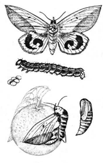
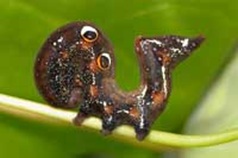
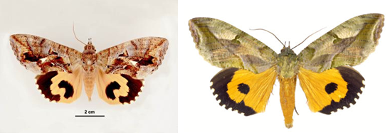

TOMATO :: MAJOR PESTS :: FRUIT SUCKING MOTH
6. Fruit sucking moth: Othreis fullonica, O. materna, O. ancilla (Noctuidae: Lepidoptera)
Damage symtpoms
|  |
|---|
Adults suck the juice of fruits by piercing. Infested fruits will shrink, shrivel, rot and ultimately drop down, causing direct loss to harvestable produce.
Bionomics
Larva: Semilooper with orange blue and yellow spots on velvetty dark speckled body. Moth: Stout built; with grey and orange coloured wings. O. materna: Three black spots on forewings. O. fullonica: Tripod black mark on forewings and curved marking on hind wing. Larva feeds on the leaves of the creeper weed Tinospora cardifolia and Cocculus sp.
|  |
|---|
|  | |
|---|---|
| Othreis fullonica | materna |